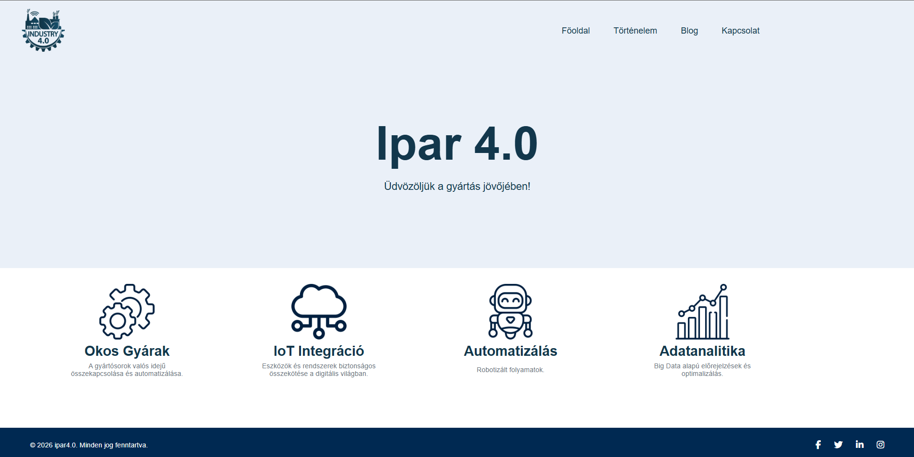
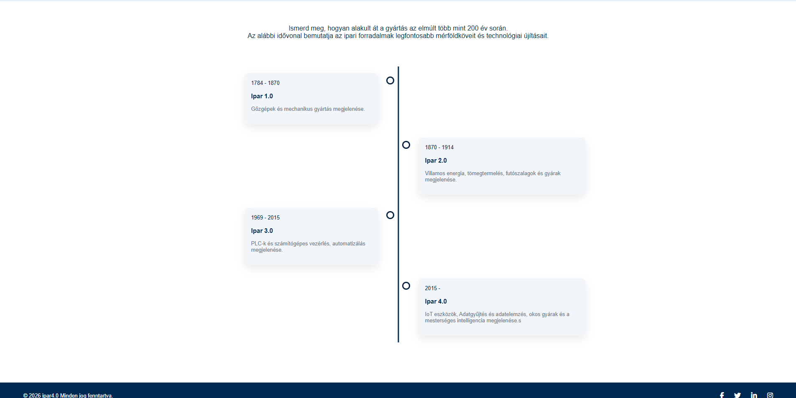
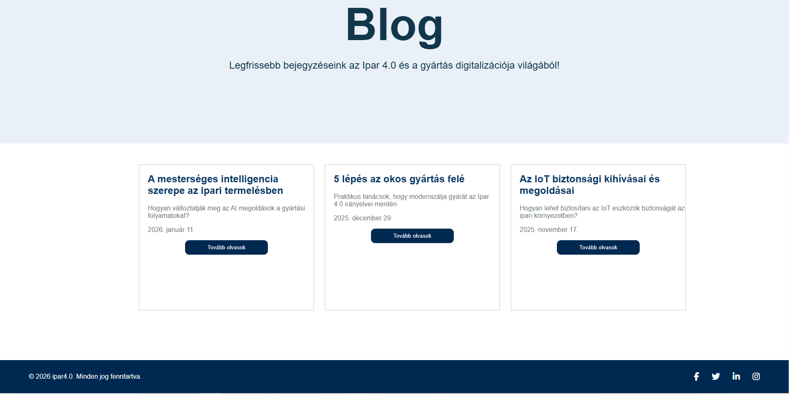
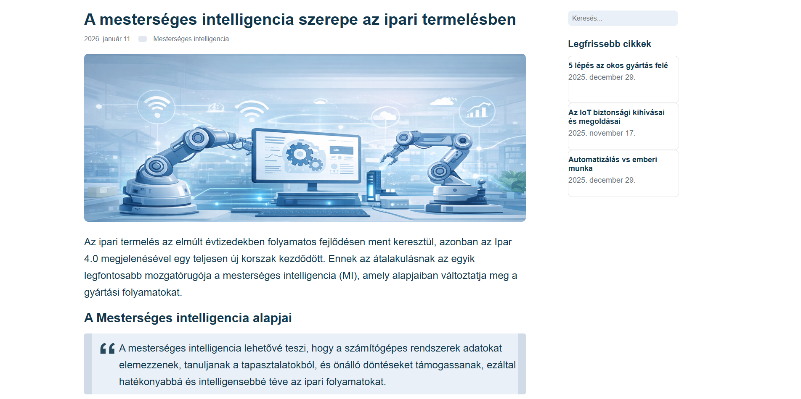
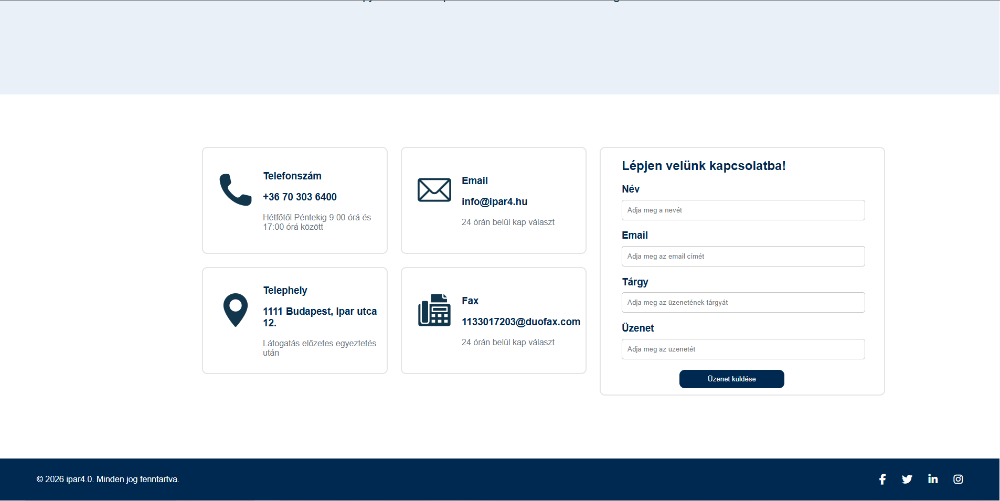
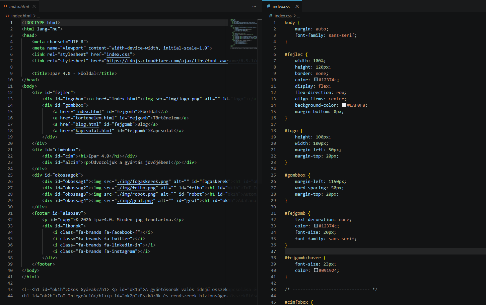
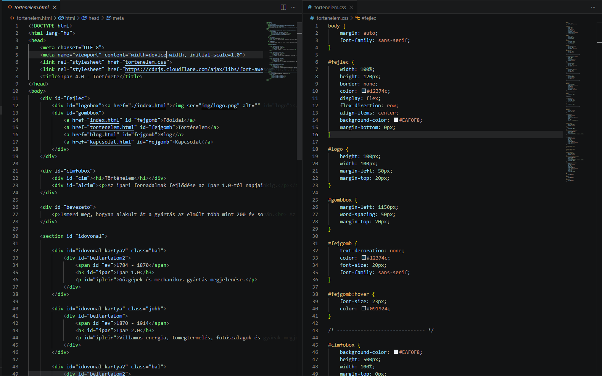
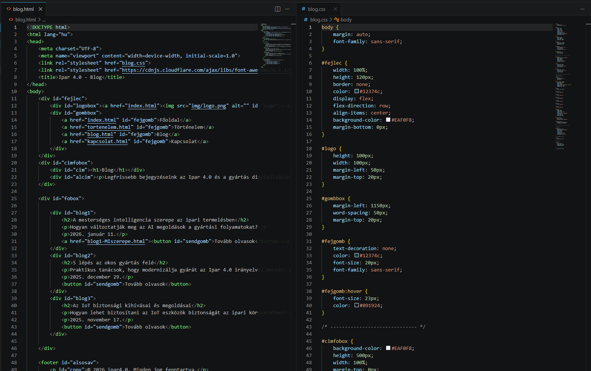
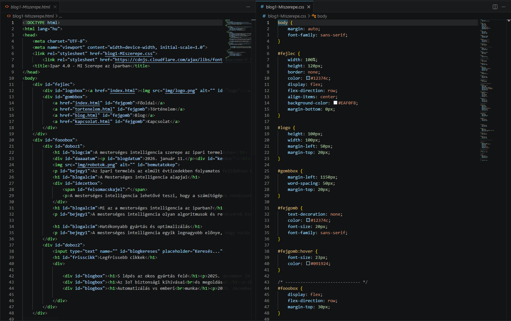
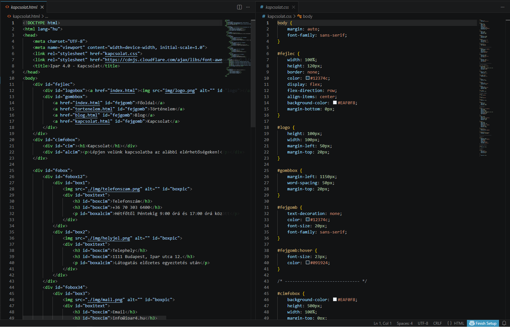

Projekt #5 - Webkészítés
Projektfeladat leírása
A projekt feladata egy többoldalas weboldal elkészítése volt HTML és CSS használatával. A feladat célja az volt, hogy a tanulók alkalmazzák a webfejlesztés során eddig tanult alapvető technológiákat, valamint megismerjék egy weboldal felépítésének és elkészítésének folyamatát. A weboldalnak egy választott témát kellett bemutatnia, amely jelen esetben az Ipar 4.0 témakör volt. A projekt során a weboldalnak különböző elemeket kellett tartalmaznia, például szöveget, képeket, linkeket és navigációs gombokat. Emellett legalább öt külön HTML oldalból álló struktúrát kellett létrehozni az index oldalon kívül. A projekt célja az volt, hogy a tanulók gyakorlati tapasztalatot szerezzenek a weboldalak felépítésében és működésében.
Projektfeladat megvalósításának lépései
A projekt első lépése a weboldal témájának kiválasztása volt. Több lehetőség közül végül az Ipar 4.0 témát választottam, mivel ez a szakmámhoz szorosan kapcsolódik. A következő lépés a szükséges információk összegyűjtése és a weboldal tartalmának megtervezése volt. A tervezési folyamat során eldöntöttem, hogy a weboldal tartalmazni fog egy blog részt is, ahol az ipar 4.0 történelmét, felhasználási területeit és különböző érdekességeket mutatok be. Ezután elkészítettem a weboldal egyes aloldalait HTML és CSS segítségével. A közös elemeket minden oldalban egységesen használtam, hogy a weboldal megjelenése egységes maradjon. A projekt végén a weboldalt teszteltem, majd elkészítettem a szükséges dokumentációt.
A projektben használt hardveres eszközök
● Számítógép ●
A projektben használt szoftveres eszközök
● Visual Studio Code ●
● W3Schools ●
A fejlesztés során a Visual Studio Code szerkesztőt használtam a HTML és CSS fájlok elkészítéséhez, míg a Google Chrome böngészőt a weboldal teszteléséhez. A W3Schools oldal segítséget nyújtott a különböző HTML és CSS megoldások megvalósításában.
Konklúzió és Önreflexió
A projekt során sikerült egy működő, többoldalas weboldalt elkészítenem, amely bemutatja az Ipar 4.0 témakörét. A feladat során megtanultam, hogyan lehet egy weboldalt megtervezni, felépíteni és egységes szerkezetben megvalósítani. A projekt elején a legnagyobb kihívást a megfelelő téma kiválasztása és az információk összegyűjtése jelentette. Miután azonban a tervezési folyamat lezárult, a weboldal elkészítése már gördülékenyen haladt. A projekt segített abban, hogy jobban megértsem a HTML és CSS alapú weboldalkészítés folyamatát. Összességében a feladat hozzájárult a webfejlesztési ismereteim bővítéséhez és a gyakorlati tapasztalataim növeléséhez.
Képek és Videók









